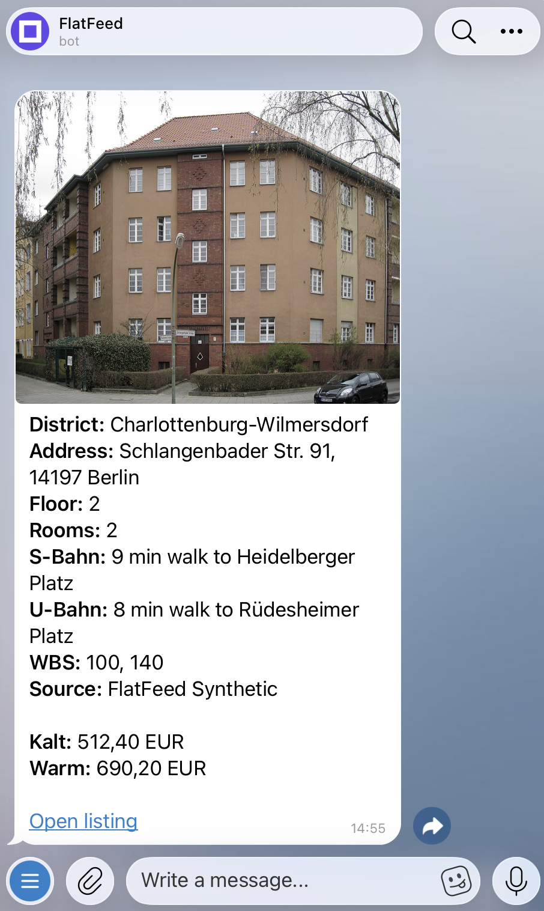

{kind=link}
01
Four fields, not a generic search
The prototype keeps only criteria used in its match decision. Unknown rent or room values fail closed instead of producing a confident-looking match.
Product case study · working prototype · synthetic catalog
A renter saves four criteria once — WBS, district, maximum Kaltmiete and rooms. FlatFeed normalizes inconsistent listing text, applies the same matching rules to every result and presents matching apartments as standardized cards.
WBS (Wohnberechtigungsschein) is a certificate used to qualify for subsidized housing in Berlin. Kaltmiete is rent before utilities.

01Product
The working hypothesis: WBS renters lose time re-reading fragmented listings and re-checking the same four criteria on each one. FlatFeed tests one narrow job: set a filter once, then see active matches in one consistent format.
WBS, district, maximum Kaltmiete and rooms.
Fixed rules turn listing text into comparable fields.
The synthetic adapter re-checks that the listing is still active in its local catalog.
Explicit rules compare all four saved criteria.
Optional background notifications skip matches already recorded as delivered.
02Decisions
01
The prototype keeps only criteria used in its match decision. Unknown rent or room values fail closed instead of producing a confident-looking match.
02
Parsing and matching are deterministic, so every renter-facing match can be explained field by field. AI QA is a separate admin-only review: it can flag a suspected parsing mistake, but it cannot change listings, matching rules or renter-facing results.
03
Before adding sources, I protected the core loop against stale and duplicate results. Every card is re-checked against the catalog before delivery, background notifications skip matches already recorded as delivered, and renters can delete their saved data.
03Evidence
Repository evidence shows what runs and what the synthetic evaluation measured. The open questions require permitted live data and renter observation.
Demonstrated now
Not demonstrated yet
Synthetic frozen validation
Balanced synthetic cases, not live listings or production accuracy. With permitted real data, an admin would still review every alert and a random sample of listings with no alert so missed parser errors can be measured.
Inspect the work
Another case
Opsqora draws the AI boundary differently: the model clusters support feedback, and humans make the product decision. Read the case study →